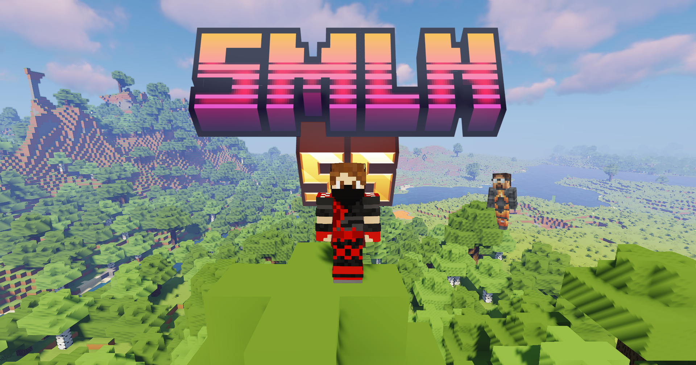

Depuis décembre 2023, le serveur communautaire SMLN a vu le jour,
succédant à SMLN Saison 0 puis à la Saison 1. Au fil du temps, le projet
a évolué à travers quatre saisons, chacune apportant son lot de
nouveautés, de défis et de moments mémorables, toutes plus amusantes
les unes que les autres (même si l’on évitera de trop s’attarder sur
le semi-échec qu’a été la saison 4...).
Aujourd’hui, c’est avec un immense plaisir que nous annonçons
l’ouverture de SMLN Saison 5 le 26 juin 2026. Après plus d’un an
d’attente, cette nouvelle saison s’annonce exceptionnelle : plus de
260 mods incroyables, une base inspirée de la saison 2, et une
ambition claire de proposer l’expérience la plus aboutie jamais
réalisée.
Préparez-vous, car cette saison promet d’être la plus
impressionnante de toute l’histoire de SMLN !
Sortie de SMLN
TRAILERS
MICRO TRAILER
MODS CONSEQUENTS